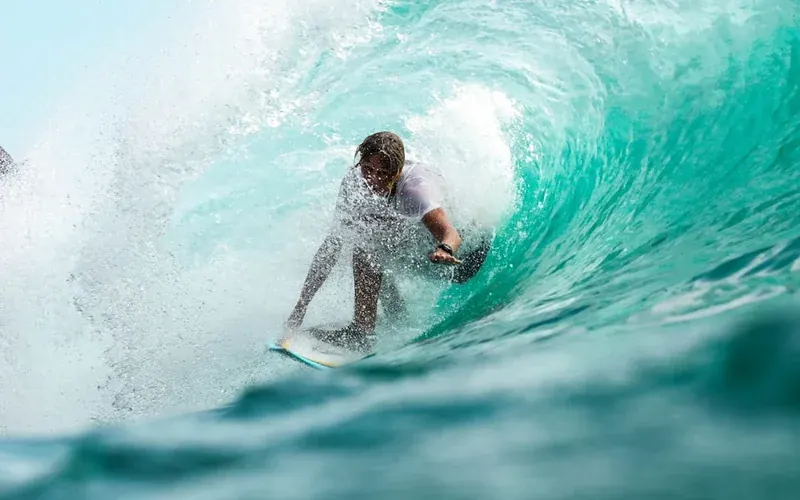

🔥 亲子首推 · 成就感爆棚01 皇后湾 (后海角 / 铁炉港)
海棠湾后海 · 距酒店11km (15分)顺路度★★★★★
孩子体验★★★★★ 爆表
门票开销0 元 (全开放)
景色特点：半月形野趣海湾，背靠海棠湾原生椰林与礁石岬角。海水浅而清澈，浪花柔和雪白，既有原生态渔村的生活烟火，又是享誉全国的轻量冲浪与赶海宝地。
🎯 亲子核心玩法与成就感：
① 儿童冲浪站板挑战：7~9岁是学冲浪的黄金年龄，浪小水浅，专业教练带2次推板即可成功站上冲浪板滑向岸边，拍照英姿飒爽，自豪感铭刻一生！
② 八月十八天文大潮赶海：正值中秋超级大退潮，铁炉港大面积礁石裸露，亲手抓面包海星、捡花蛤、摸小海胆，装满观察桶，收获满满！
💡 亲子贴士：
穿防滑潜水鞋防藤壶划脚；冲浪选傍晚15:30之后，避开正午烈日。
✅ 裁决：海棠湾后花园，零赶路负担，亲子体验感绝对第一名！